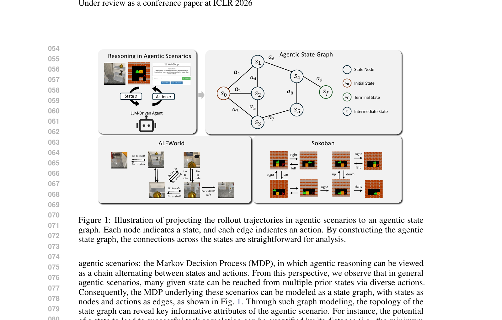
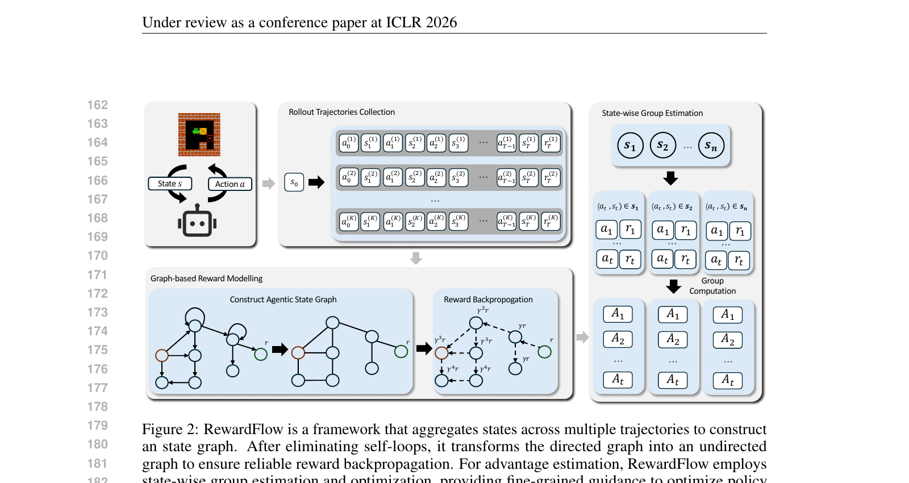
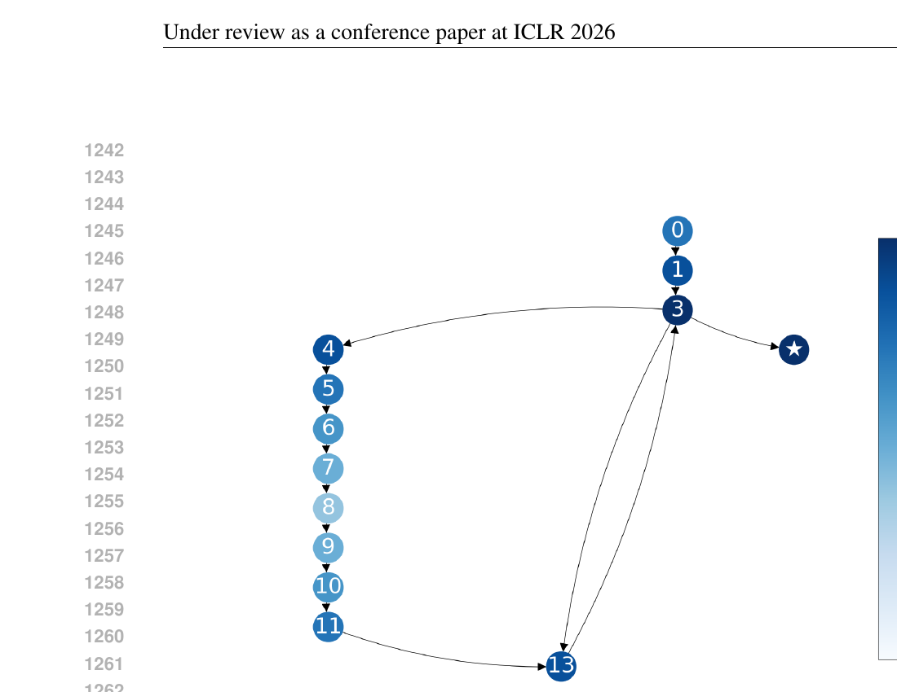
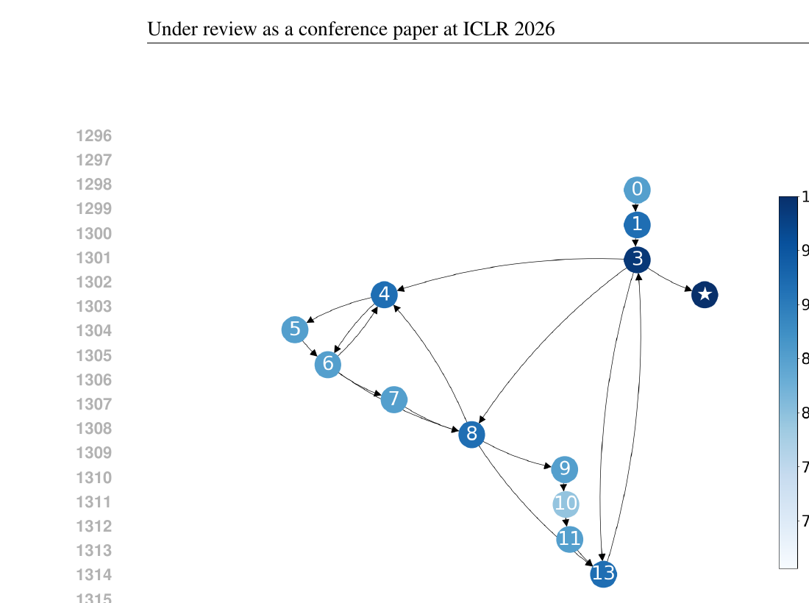
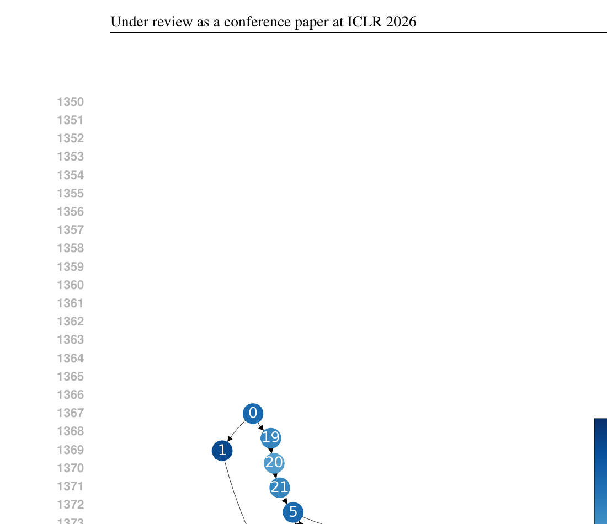
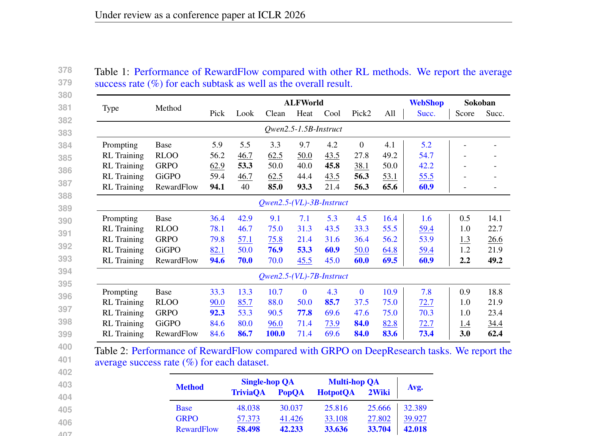
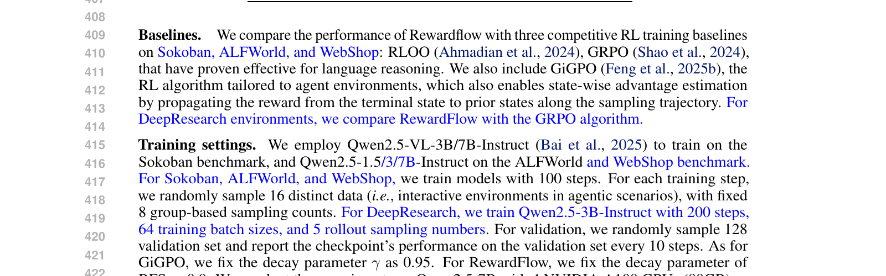
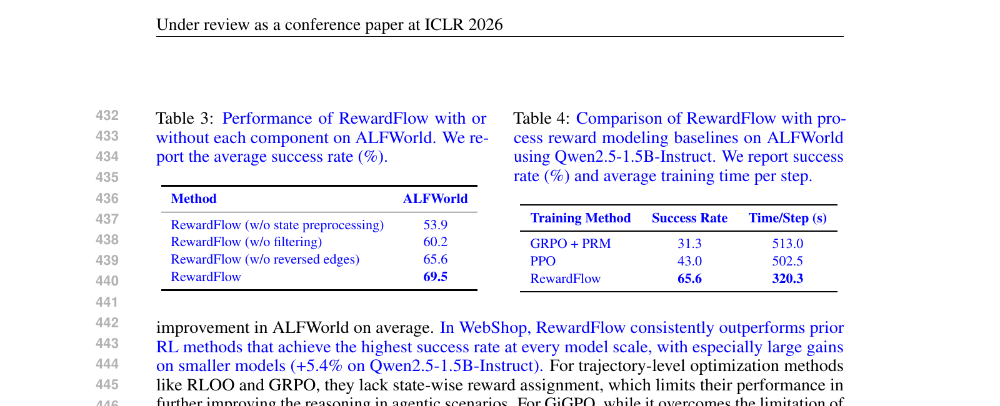
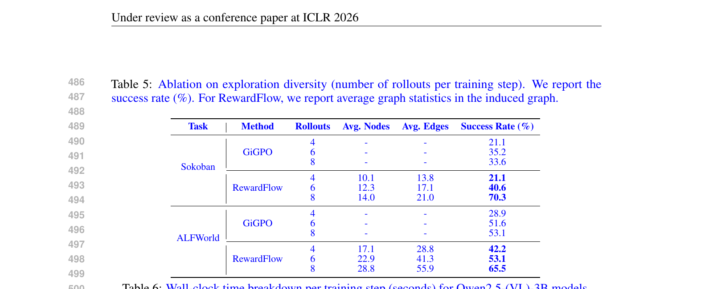

이 논문은 LLM 기반 에이전트의 멀티턴 강화학습(RL)에서 발생하는 희소 보상(sparse reward) 문제와 크레딧 할당(credit assignment) 문제를 해결하기 위해 RewardFlow라는 그래프 기반 보상 모델링 프레임워크를 제안한다.
핵심 아이디어는 에이전트의 행동 궤적(trajectory)을 상태 그래프(state graph)로 모델링하고, 성공한 터미널 상태로부터 그래프 전파 알고리즘(BFS, Personalized PageRank)을 사용해 모든 중간 상태에 보상 신호를 역전파하는 것이다. 이렇게 생성된 조밀하고 상태별(state-wise) 보상 신호를 활용하여, 각 행동이 성공에 가까워지는지 멀어지는지를 판단할 수 있는 세밀한 피드백을 제공한다.
RewardFlow를 이해하려면 먼저 GRPO를 이해해야 한다. GRPO는 DeepSeekMath(Shao et al., 2024)에서 제안된 RL 알고리즘으로, PPO의 critic 모델 없이도 효과적인 정책 최적화를 가능하게 한다.
GRPO는 하나의 태스크(문제)에 대해 현재 정책으로부터 K개의 롤아웃(rollout)을 샘플링한다. 이 K개의 궤적을 하나의 "그룹"으로 묶고, 각 궤적이 받는 최종 보상(outcome reward)을 그룹 내에서 상대적으로 비교한다. 구체적으로, 그룹 내 보상의 평균(μ)과 표준편차(σ)를 계산하여, 각 궤적의 어드밴티지(advantage)를 정규화한다:
그룹 내에서 평균보다 높은 보상을 받은 궤적은 양의 어드밴티지를, 낮은 보상을 받은 궤적은 음의 어드밴티지를 받는다. 이를 통해 별도의 가치 함수(value function) 모델 없이도 상대적 비교만으로 정책을 업데이트할 수 있다.
GRPO의 근본적 한계는 궤적 전체에 하나의 보상만 할당한다는 점이다. 에이전트가 20~40 스텝의 행동을 취한 뒤, 최종 성공/실패 여부로만 보상이 결정된다. 이는 다음과 같은 문제를 야기한다:
RewardFlow는 GRPO의 그룹 샘플링 메커니즘은 유지하되, 보상 할당 방식을 궤적 수준에서 상태 수준으로 변환한다. 여러 궤적에서 관찰된 상태와 행동을 하나의 상태 그래프로 통합하고, 성공 노드로부터 역전파된 보상을 사용하여 각 (상태, 행동) 쌍에 대한 세밀한 어드밴티지를 계산한다. 이 state-wise 어드밴티지는 PPO 스타일의 클리핑된 목적함수로 정책을 업데이트하는 데 사용된다.
에이전트 환경을 마르코프 결정 과정(MDP) M = ⟨S, A, P, r, γ⟩로 모델링한다. 핵심 관찰: 에이전틱 MDP에서 많은 상태는 합류적(junctional) — 여러 이전 상태로부터 다른 행동을 통해 도달 가능하고, 발산적(divergent) — 하나의 상태에서 여러 다른 행동으로 여러 후속 상태로 이동 가능하다. 따라서 MDP를 선형 체인이 아닌 그래프로 표현하는 것이 자연스럽다.
실제로는 전체 상태 그래프를 열거할 수 없으므로, K개의 롤아웃 궤적을 수집하여 근사한다. 이 궤적들의 합집합으로 "원시(raw)" 상태 그래프를 구성한다:
(1) 무효 엣지 제거: 상태를 변경하지 않는 전이(self-loop)나 환경에서 거부/오류 처리된 행동을 제거한다. VALID(s, a, s')라는 술어를 정의하여, 행동이 성공적으로 완료되고 실제 상태 변경이 일어난 경우만 유효한 엣지로 남긴다.
(2) 역방향 엣지 추가: 많은 에이전트 환경에서 행동은 자연스러운 역(inverse)을 갖는다 (예: open ↔ close, go left ↔ go right). 역방향 엣지를 추가하여 양방향 그래프로 변환함으로써, 탐색이 제한적인 경우에도 보상 전파의 도달 범위를 확대한다.
정제된 상태 그래프 위에서 3단계로 보상을 전파한다:
(1) 성공까지의 최단 홉 거리: 모든 성공 터미널 상태 S_succ로부터 역방향 BFS(multi-source inverse BFS)를 실행하여, 각 상태 s에서 가장 가까운 성공 상태까지의 최단 홉 거리 d(s)를 계산한다.
(2) 상태별 보상 할당:
성공 상태는 R(s)=1이고, 멀어질수록 R(s)는 단조 감소한다.
(3) 행동 수준 보상 셰이핑:
직관적으로, 성공에 가까워지면 r̃ > 0, 멀어지면 r̃ < 0, 같은 수준이면 r̃ = 0이다.
GRPO가 궤적 수준에서 어드밴티지를 계산하는 것과 달리, RewardFlow는 상태 수준에서 어드밴티지를 계산한다:
이 state-wise 베이스라인은 state에만 의존하므로 편향되지 않은 정책 그래디언트를 유지하면서 분산을 줄인다.
PPO 스타일의 클리핑된 대리 목적함수를 사용한다:
여기서 ρ_t는 현재 정책과 행동 정책 간의 중요도 비율(importance ratio)이다.

이 그림은 크게 네 부분으로 구성된다:
왼쪽 상단 — "Reasoning in Agentic Scenarios": LLM 기반 에이전트가 환경과 상호작용하는 과정을 보여준다. "State s"에서 "Action a"를 취하는 LLM-Driven Agent가 그려져 있다.
오른쪽 상단 — "Agentic State Graph": 여러 궤적을 하나의 상태 그래프로 통합한 결과물이다. 노드 s₀(초기 상태, 갈색 배경), 중간 상태 노드 s₁~s₅(흰색 배경), 터미널 상태 노드 s_f(보라색 배경)가 있다. 엣지는 행동 a₁~a₉로 레이블링되어 있으며, s₀에서 a₁→s₁, a₂→s₂, a₃→s₃로 분기하고, s₂에서 a₄→s₄, a₅→s₅로, s₁에서 a₆→s₄로, s₄에서 a₉→s_f로, s₅에서 a₇→s₃로, s₃에서 a₈→s₂로 연결된다. 핵심은 여러 경로가 같은 상태를 공유하며 그래프 구조를 형성한다는 점이다.
왼쪽 하단 — "ALFWorld" 예시: 텍스트 기반 가정환경 에이전트의 궤적을 보여준다. "Go to shelf 1" → 선반 앞 → "Go to table 1" → 테이블 앞 → "Put cup in/on table 1" 식으로 행동 시퀀스가 진행되며, 에이전트가 물건을 집어 테이블에 놓는 과정이 여러 갈래로 나뉘어 그래프를 형성한다.
오른쪽 하단 — "Sokoban" 예시: 비주얼 퍼즐 게임 Sokoban의 상태 전이를 보여준다. 6×6 격자 위에서 플레이어(초록색 캐릭터)가 상자(노란색, X 표시)를 목표 위치(빨간 다이아몬드)로 밀어 넣는 과정이다. right, left, up, down 행동에 따른 격자 상태 변화가 트리 구조로 표시되어 있고, 같은 보드 상태에 다른 경로로 도달할 수 있음을 시각적으로 보여준다.

이 그림은 RewardFlow의 전체 워크플로우를 4개 구역으로 나누어 보여준다:
왼쪽 상단 — "Rollout Trajectories Collection": 하나의 초기 상태 s₀(주황색 퍼즐 이미지)에서 K개의 궤적 τ⁽¹⁾, τ⁽²⁾, ..., τ⁽ᴷ⁾를 수집한다. 각 궤적은 (a₀, s₁, a₁, s₂, ..., s_T) 형태의 상태-행동 시퀀스로 표현된다.
왼쪽 하단 — "Graph-based Reward Modelling": 두 개의 하위 블록이 있다. (a) "Construct Agentic State Graph": 수집된 궤적들을 하나의 그래프로 통합하는 과정. 여러 노드(상태)와 엣지(행동)가 연결된 방향 그래프가 그려져 있고, self-loop이나 무효한 엣지가 점선으로 표시되어 제거 대상임을 나타낸다. (b) "Reward Backpropagation": 성공 터미널 노드(r⁺, 초록색)에서 다른 노드로 보상이 역전파되는 과정. 각 노드 옆에 r⁺₁, r⁺₂ 등의 전파된 보상값이 표시되고, 실패 터미널(r⁻, 빨간색)도 나타나 있다.
오른쪽 — "State-wise Group Estimation": 상태별 어드밴티지를 계산하는 과정을 도식화한다. 상단에 상태 s₁, s₂, ..., sₙ이 나열되고, 각 상태에서 취해진 (행동, 보상) 쌍이 해당 상태 아래에 표 형태로 그룹핑된다. 그 아래로 "Group Computation"을 통해 어드밴티지 A₁, A₂, ..., Aₗ이 계산되어 정책 업데이트에 사용된다.



이 세 그림은 ALFWorld 환경에서 롤아웃 수를 1→2→3으로 증가시킬 때 상태 그래프가 어떻게 확장되는지 보여준다. 각 노드는 에이전트가 방문한 고유 상태를 나타내며, 색상 스펙트럼(흰색→연한 파란→진한 파란)은 전파된 보상값(Propagated Reward)을 나타낸다. 진한 색일수록 성공 터미널에 가까움을 의미한다. 롤아웃이 추가될수록 새로운 상태와 전이가 발견되어 그래프가 풍성해지고, BFS 기반 보상 전파가 더 정확한 거리 정보를 계산할 수 있게 된다.
4개의 에이전트 환경에서 평가를 수행했다:
Sokoban — 비주얼 퍼즐 게임. 6×6 격자 위에서 플레이어가 상자를 목표 위치로 밀어야 하는 고전적인 퍼즐. 행동 공간: up, down, left, right.
ALFWorld — 텍스트 기반 가정환경 시뮬레이터. 3,827개의 가사 태스크, 6가지 유형: Pick & Place, Examine in Light, Clean & Place, Heat & Place, Cool & Place, Pick Two & Place.
WebShop — 대규모 웹 네비게이션 벤치마크. 118만 개의 실제 Amazon 제품이 포함된 웹페이지에서 자연어 쇼핑 지시를 수행. 상태 공간이 사실상 무한하며 분기 인자가 매우 높음.
DeepResearch — 검색 엔진을 활용하여 지식 집약적 질문에 답하는 에이전틱 프레임워크. 높은 확률성(stochasticity)이 특징. TriviaQA, PopQA (단일 홉 QA)와 HotpotQA, 2WikiMultiHopQA (멀티 홉 QA)에서 평가.
모델: Qwen2.5-VL-3B/7B-Instruct (Sokoban), Qwen2.5-1.5B/3B/7B-Instruct (ALFWorld, WebShop), Qwen2.5-3B-Instruct (DeepResearch)
Sokoban, ALFWorld, WebShop: 100 스텝 학습. 매 스텝마다 16개의 다른 태스크를 랜덤 샘플링하고, 고정된 8개의 그룹 기반 롤아웃 수행.
DeepResearch: 200 스텝, 128개 학습 배치, 64개 배치 사이즈, 5개 롤아웃.
하드웨어: 4× NVIDIA A100 GPU (80GB) 또는 4× NVIDIA H20 GPU (90GB). Verl-Agent 프레임워크를 사용.


| Method | TriviaQA | PopQA | HotpotQA | 2Wiki | Avg |
|---|---|---|---|---|---|
| Base | 48.04 | 30.04 | 25.82 | 25.67 | 32.39 |
| GRPO | 57.37 | 41.43 | 33.11 | 27.80 | 39.93 |
| RewardFlow | 58.50 | 42.23 | 33.64 | 33.70 | 42.02 |
멀티 홉 QA 태스크에서 성능 이득이 더 크며, 특히 2WikiMultiHopQA에서 GRPO 대비 +5.9% 향상. 높은 확률성과 관측 모호성이 특징인 실제 환경에서도 RewardFlow의 효과가 입증됨.

| Method | ALFWorld |
|---|---|
| RewardFlow (w/o state preprocessing) | 53.9 |
| RewardFlow (w/o filtering) | 60.2 |
| RewardFlow (w/o reversed edges) | 65.6 |
| RewardFlow (full) | 69.5 |
| Training Method | Success Rate | Time/Step (s) |
|---|---|---|
| GRPO + PRM | 31.3 | 513.0 |
| PPO | 43.0 | 502.5 |
| RewardFlow | 65.6 | 320.3 |
PPO 대비 +22.6%, GRPO+PRM 대비 +34.3% 성능 향상이면서 학습 시간도 가장 짧다.

| Task | Method | Rollouts | Avg Nodes | Avg Edges | Success Rate |
|---|---|---|---|---|---|
| Sokoban | GiGPO | 4 | - | - | 21.1 |
| GiGPO | 6 | - | - | 35.2 | |
| GiGPO | 8 | - | - | 33.6 | |
| RewardFlow | 4 | 10.1 | 13.8 | 21.1 | |
| RewardFlow | 6 | 12.3 | 17.1 | 40.6 | |
| RewardFlow | 8 | 14.0 | 21.0 | 70.3 | |
| ALFWorld | GiGPO | 4 | - | - | 28.9 |
| GiGPO | 6 | - | - | 51.6 | |
| GiGPO | 8 | - | - | 53.1 | |
| RewardFlow | 4 | 17.1 | 28.8 | 42.2 | |
| RewardFlow | 6 | 22.9 | 41.3 | 53.1 | |
| RewardFlow | 8 | 28.8 | 55.9 | 65.5 |
롤아웃이 제한적(4개)인 경우에도 RewardFlow는 GiGPO를 일관적으로 매칭하거나 능가하며, 롤아웃 수 증가 시 이득이 더 크게 확대된다.
| Component | ALFWorld | WebShop | Sokoban |
|---|---|---|---|
| Rollout Sampling | 205.01 | 202.17 | 188.72 |
| Policy Update | 175.09 | 205.99 | 60.05 |
| Reference Prob Computation | 46.43 | 51.31 | 26.32 |
| Old Step Prob Computation | 47.22 | 52.13 | 26.97 |
| Graph Construction + Reward Propagation | 1.87 | 1.47 | 2.39 |
그래프 구축과 보상 전파는 세 환경 모두에서 2.39초 이하로, 롤아웃 샘플링(~200초)이나 정책 업데이트(~60~206초)에 비해 무시할 수 있는 수준이다.
이 논문은 ICLR 2026에 제출되어 3명의 리뷰어로부터 평가를 받았다.
세 리뷰어 모두 (1) sparse reward 문제를 해결하기 위한 상태 그래프 기반 보상 전파라는 핵심 아이디어의 참신성과 직관성, (2) 베이스라인 대비 일관된 성능 향상, (3) 논문의 명확한 작성과 시각적 설명을 긍정적으로 평가했다.
가장 핵심적인 우려는 적용 가능성의 범위이다. 세 리뷰어 모두 Sokoban이나 ALFWorld처럼 상태가 명확하게 정의되는 이산적 환경에서는 잘 작동하지만, 자연어 기반이나 연속적인 상태 공간을 가진 실제 환경으로의 확장이 불분명하다고 지적했다. Reviewer XBZr은 이 점에서 가장 비판적으로, 소규모 MDP에만 적용 가능하다고 판단하여 strong reject(0점)을 부여했다.
Reviewer XBZr과 나머지 두 리뷰어 사이에 큰 시각차가 있다. XBZr은 방법론의 건전성(soundness)을 1점으로 평가하며 결정론적 환경 가정의 한계와 BFS의 확장성 의문을 제기한 반면, nRsk와 ajjd는 soundness를 3점(good)으로 평가하며 방법론 자체는 건전하다고 인정했다. 이 극단적 시각차가 rejection의 주요 원인으로 보인다.
저자들은 리버틀에서 (1) WebShop과 DeepResearch라는 대규모/확률적 환경에서의 추가 실험으로 적용 가능성 우려를 해소하고, (2) 탐색 다양성 ablation으로 롤아웃 수와 그래프 품질의 관계를 분석하고, (3) 학습 효율성 데이터(Table 6)로 계산 비용 우려에 대응했다. 그러나 Reviewer XBZr의 근본적 우려를 완전히 해소하지 못한 것으로 보인다.
저자들이 인정한 한계:
향후 연구 가능성: 그래프 구축의 강건성 향상, 적응적 디노이징 방법 개발, GNN 기반 학습된 보상 전파 함수 탐색, 더 큰 규모의 LLM과 더 복잡한 실제 환경에서의 검증.
분석 작성일: 2026-03-11